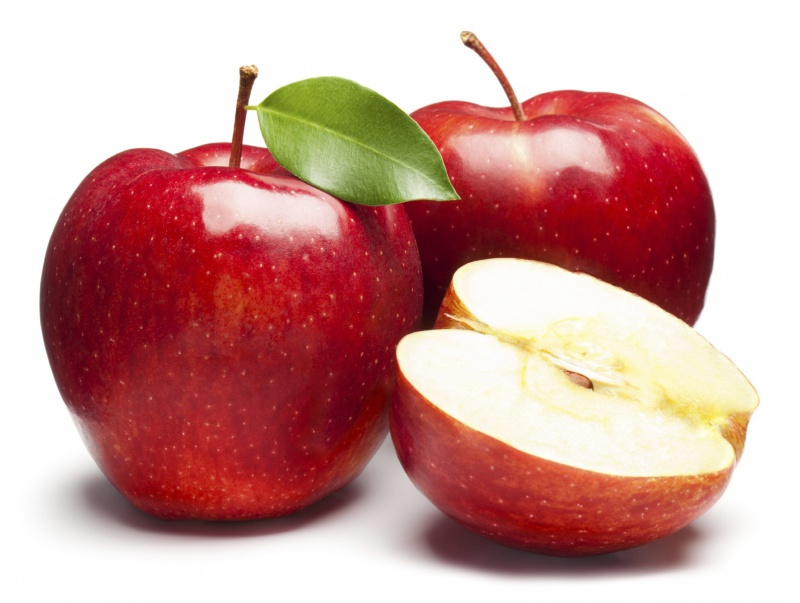

Яблуко - надзвичаний фрукт з надзвичайними властивостями!
Щоденне вживання фруктів – запорука здоров’я та отримання організмом необхідних для життєдіяльності речовин.
Такі добре знайомі нам яблука неймовірно якісно виконують цю функцію.
Історія
Батьківщиною яблуні є Центральна Азія, хоча деякі вчені
вважають, що перші їстівні солодкі яблука на Землі з’явилися
в гірських районах
нинішнього Казахстану біля кордону з Китаєм
на висоті більше двох тисяч метрів. Це відкриття стало
несподіванкою для багатьох вчених:
до цього часу вважалося,
що яблука – це гібриди різних фруктів. Пращури сучасного фрукта
досі ростуть на “історичній батьківщині”,
але їх залишилося небагато і знайти їх можна тільки за допомогою
фахівців, стверджує вчений Беррі Джуніпер, автор книги “Історія яблук”.
Поширювали казахські яблука, на думку Джуніпер, спочатку ведмеді,
які вибирали найбільш великі і солодкі плоди і розносили їх насіння.
Потім частково культивований фрукт став “переміщатися” в західному
напрямку. До епохи бронзи
яблука “дісталися” до Персидської затоки,
де були розбиті фруктові
сади. В Європу, в тому числі і до Великобританії, їх доставили римські легіонери.
Кулінарія
Напевно, ви не раз пробували запікати яблука – з медом, корицею, сиром та
родзинками, із вершковим маслом і просто цілими. Мені ж швидко
набридає
одноманітність,
тому я не перестаю шукати все нові й нові смакові рішення. Я зробив
запечені яблука з сиропом із каркаде. Вийшло й
смачно, і красиво при подачі.
Очевидно, ви не раз пробували штрудель, і можливо, навіть на батьківщині цієї
страви – у Відні. І, напевно, у вас залишився в пам’яті ідеальний смак цього
пирога. Мій ідеальний
штрудель – це, коли тендітна золотисто-коричневе тісто
поєднується з ромовими родзинками і корицею. До слова, мій рецепт
найоригінальніший, адже так готують
штрудель
у Відні в придворній пекарні замку Шенбрунн. Навіть якщо у вас
є свій рецепт ідеального штруделя, приготуйте і цей – у вас буде, із чим порівняти.
Краса і здоровя
Яблуко містить до 80% води, решта 20% корисних речовин: клітковина, органічні кислоти, калій,
натрій, кальцій, магній, фосфор, залізо, йод, а також вітаміни А, В1, В3, РР, С та
ін.
Яблука містять мало калорій, тому є прекрасною дієтою для бажаючих схуднути.
Яблука мають невисоку калорійністю. У 100 г свіжого яблука міститься всього лише 47 ккал.
Продукт практично позбавлений жирів, проте має в своєму складі вуглеводи, що дозволяє
людині,
вживши яблуко, тривалий час зберігати відчуття ситості. Дуже добре підходить бажаючим схуднути
і тим, хто сидить на дієті. 100 г печених яблук
містять майже
66 кКал і також не принесуть шкоди фігурі. Але в 100 г сушених яблук 253 кКал, так що
захоплюватися ними не варто, якщо ви хочете зберегти свою вагу.
У яблуках містяться такі важливі природні кислоти, як яблучна, винна і лимонна, а в комплексі
з тими ж дубильними речовинами ці кислоти зупиняють процеси гниття і
бродіння в кишківнику, що
попереджає утворенню газів, здуття живота, сприяє природному очищенню і відновленню кишківника.
А здоровий кишківник – ключ
до довголіття і здоров’я.